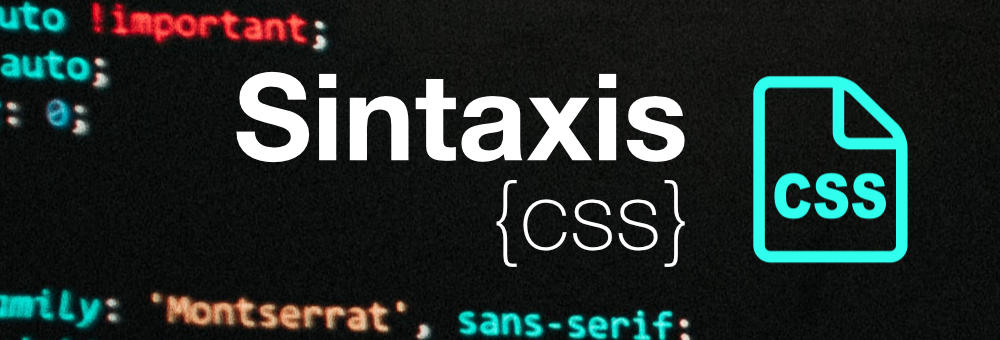

Propósito del sitio
Este sitio tiene el propósito de dinamizar el aprendizaje del tema Sintaxis y Selectores CSS, Interacción Humano Ordenador.
Sintaxis Y Selectores CSS.
Sintaxis.

La meta básica del lenguaje Cascading Stylesheet (CSS) es permitir al motor del navegador pintar elementos de la página con características específicas, como colores, posición o decoración. La sintaxis CSS refleja estas metas y estos son los bloques básicos de construcción.
• La propiedad que es un identificador, un nombre leíble por humanos, que define qué característica es considerado.
• El valor que describe como las características deben ser manejadas por el motor. Cada propiedad tiene un conjunto de valores válidos, definido por una gramática formal, así como un significado semántico, implementados por el motor del navegador.
Selectores CSS.

Los selectores definen sobre qué elementos se aplicará un conjunto de reglas CSS.
Selector de tipo.
Selecciona todos los elementos que coinciden con el nombre del elemento especificado.
Sintaxis: eltname
Ejemplo: input se aplicará a cualquier elemento input.
Selector de clase.
Selecciona todos los elementos que tienen el atributo de class especificado.
Sintaxis: .classname
Ejemplo: .index seleccionará cualquier elemento que tenga la clase "index".
Selector de ID.
Selecciona un elemento basándose en el valor de su atributo id. Solo puede haber un elemento con un determinado ID dentro de un documento.
Sintaxis: #idname
Ejemplo: #toc se aplicará a cualquier elemento que tenga el ID "toc".
Selector universal.
Selecciona todos los elementos. Opcionalmente, puede estar restringido a un espacio de nombre específico o a todos los espacios de nombres.
Sintaxis: * ns|* *|*
Ejemplo: * se aplicará a todos los elementos del documento.
Selector de atributo.
Selecciona elementos basándose en el valor de un determinado atributo.
Sintaxis: [attr] [attr=value] [attr~=value] [attr|=value] [attr^=value] [attr$=value] [attr*=value]
Ejemplo: [autoplay] seleccionará todos los elementos que tengan el atributo "autoplay" establecido (a cualquier valor).
Referencia Bibliográfica.
Sintaxis - CSS | MDN. (2021, November 14). Mozilla.org. https://developer.mozilla.org/es/docs/Web/CSS/Syntax
Selectores CSS - CSS | MDN. (2021, November 14). Mozilla.org. https://developer.mozilla.org/es/docs/Web/CSS/CSS_Selectors
Interacción Humano Ordenador.

La disciplina que estudia cómo las personas interactúan con las computadoras y hasta qué punto las computadoras se desarrollan para interactuar con las personas se llama Interacción Humano-Computadora.
HCI consta de tres componentes: los usuarios, los ordenadores y la interacción entre ellos.
La Interacción Humano-Computadora se convirtió oficialmente en una disciplina con el advenimiento de la computadora personal.
Con el primer Macintosh, IBM PC 5150 y Commodore 64 utilizados en la oficina, la gente empezó a darse cuenta de cómo esta transición afectará no sólo a su trabajo sino a sus vidas en general.
Los PCs fueron lanzados con muchas nuevas características como procesadores de texto, facilidades de juego y ayudas de contabilidad. Con el tiempo, su nivel de sofisticación aumentó hasta el punto en que el objetivo era hacer que la interacción hombre-computadora se asemejara a la interacción entre humanos, de la forma más natural y sin fisuras posible.
HCI es un dominio interdisciplinario que abarca disciplinas como la informática, la ingeniería de los factores humanos, la inteligencia artificial, la lingüística, la filosofía, la antropología y la ciencia cognitiva.
En los últimos cinco años, HCI ha pasado rápidamente de estudiar la interacción con los ordenadores de sobremesa a centrarse casi exclusivamente en los dispositivos móviles.
¿Por qué es importante el estudio de la Interacción Humano-Computadora?
En la Interacción Humano-Computadora, las palabras clave son usabilidad, seguridad y funcionalidad. Además, para producir sistemas con estas características, la investigación de HCI debe ser consciente de las siguientes cosas:
1. Investigar y comprender los factores organizacionales, sociales y psicológicos que determinan cómo las personas utilizan la tecnología debe ser el punto de partida de cualquier proyecto de HCI. Es un proceso de aprendizaje continuo que se desarrolla a lo largo de la duración del proyecto.
2. La segunda parte más importante de la investigación de HCI es el enfoque centrado en las personas. John M. Carroll, autor y fundador del campo de la interacción hombre-computadora, escribe que HCI se está centrando cada vez más en las personas.
Se ha expandido para crear soluciones para proyectos como la accesibilidad para las personas mayores, los discapacitados cognitivos y físicos. En esta fase tan evolucionada, los diseñadores de interacción ya no están en el negocio del diseño, sino en el negocio de las personas.
En última instancia, el Diseño de Interacción Humana consiste en crear sistemas y marcos que mejoren la vida de las personas.
3. Partiendo de las necesidades del cliente, desarrollamos herramientas y técnicas para construir sistemas adecuados que satisfagan dichas necesidades.
4. Cree una interacción del sistema de usuario que sea efectiva, eficiente y segura.
Comienza por entender las necesidades de los usuarios, para construir el sistema de acuerdo a esas necesidades. No al revés, creando un sistema que tiene que cumplir con los requisitos del usuario que usted descubrió más tarde en el proceso.
Usabilidad.
La usabilidad es uno de los conceptos clave de HCI. Se trata de hacer que los sistemas sean fáciles de aprender y usar. Mejora la competitividad, la fidelización de los clientes y reduce los costes. En la fase de prototipado, durante las pruebas de usabilidad,
el equipo establece los aspectos positivos y negativos del prototipo antes de seguir desarrollándolo. Las pruebas de usabilidad se basan en factores psicológicos humanos y en la investigación de los usuarios. Los sistemas se prueban en escenarios de la vida real para permitir a los equipos tener una imagen detallada de cómo funciona el sistema.
La usabilidad es un aspecto significativo de la capacidad de un sistema para completar una tarea. Es la diferencia entre hacer el mínimo requerido y realizarlo.
Diseño de interacción humana vs Diseño de Experiencia del Usuario (UX).
HCI se centra en la investigación académica para desarrollar una comprensión empírica de los usuarios. Los diseñadores de UX están más enfocados en la industria y ponen su esfuerzo en construir productos y servicios.
Las dos disciplinas HCI y UX diseño y complementarios, por ejemplo, los diseñadores de UX pueden utilizar la investigación llevada a cabo por el HCI sobre las mentalidades de los usuarios.
Debido a que el tiempo es limitado, los diseñadores a menudo tienen que dibujar rápidamente para superar las limitaciones de la industria y acceder a los hallazgos que podrían aprovechar los conocimientos clave para sus usuarios.
Según UX Matters, los investigadores académicos de HCI contribuyen de tres maneras principales:
Innovar las interfaces informáticas de usuario, a través de la ingeniería exploratoria y la construcción de sistemas interactivos complejos.
Intente comprender cómo se utiliza el producto y cómo el usuario experimenta la interfaz a través de pruebas en laboratorios o a través de la investigación antropológica de campo.
Desarrollar descripciones teóricas sobre el producto, explicaciones e informes sobre el diseño y uso de sistemas digitales interactivos.
En general, los diseñadores que buscan mejorar el uso de la tecnología y satisfacer las necesidades de los usuarios deben dar prioridad a la HCI en su agenda.
Referencia Bibliográfica.
¿Qué es la Interacción Humano-Computadora? | Opinno. (2019). Opinno.io.
https://blog.opinno.io/es/blog/que-es-la-interaccion-humano-computadora